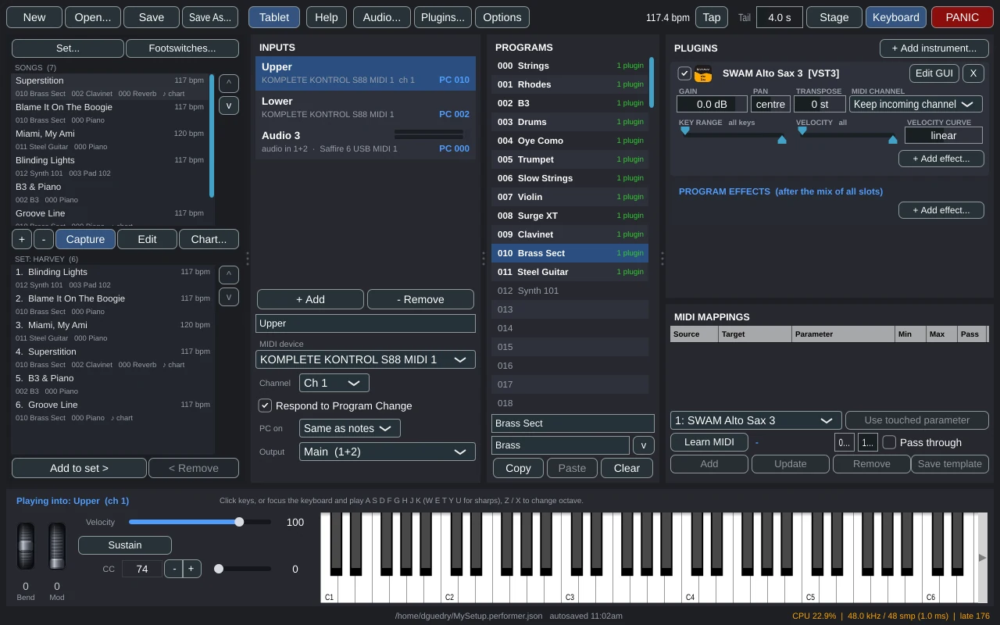
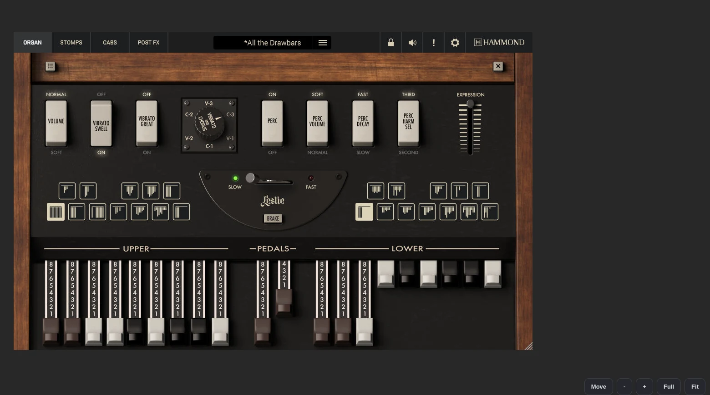
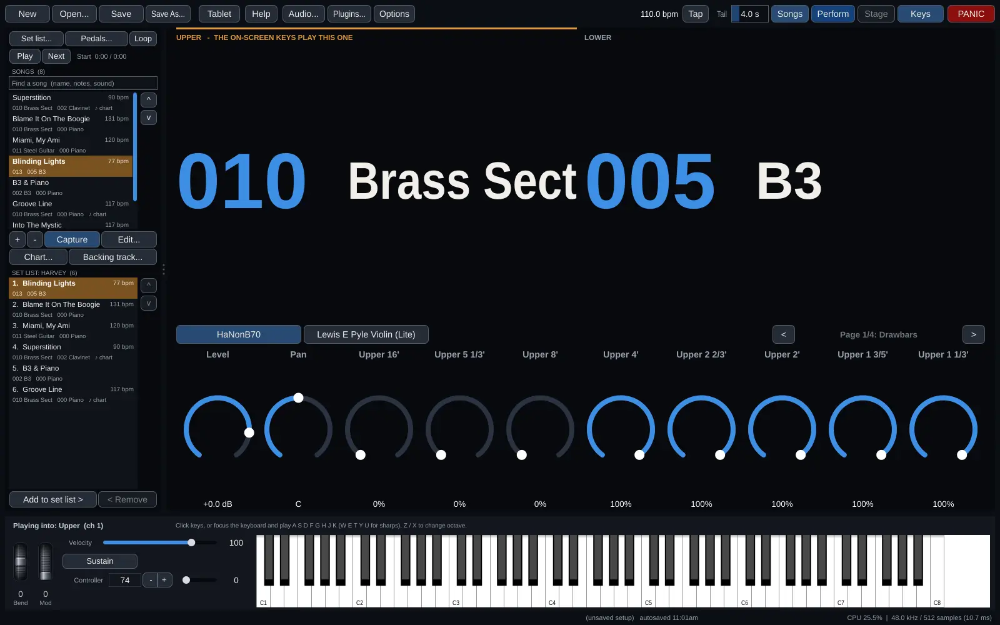
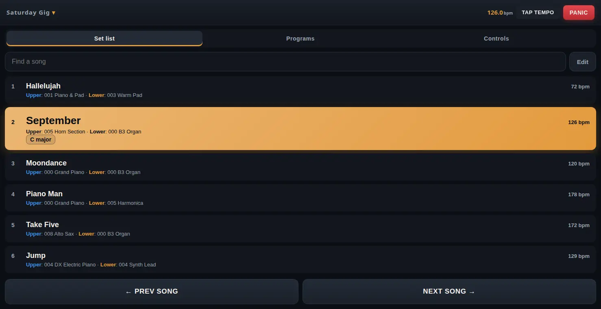
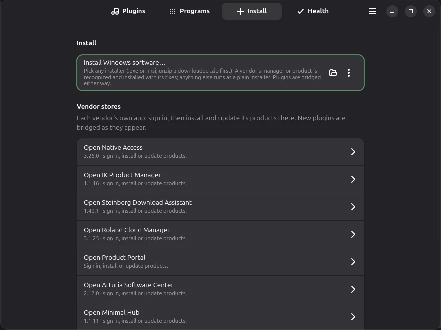
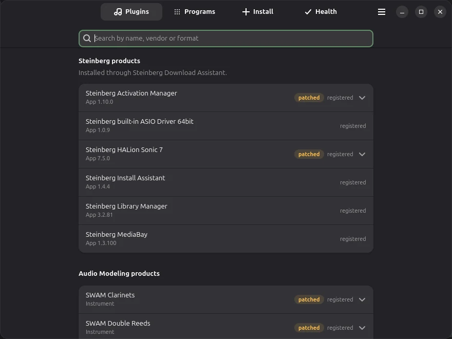
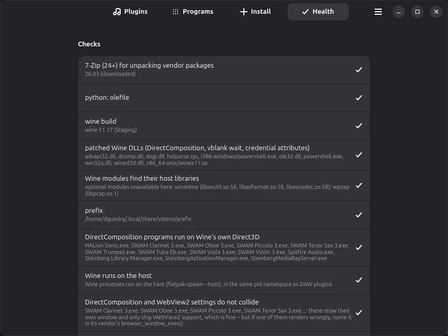

A performance host for keyboards and audio, an Ubuntu set up for
low latency, and your Windows plugins working beside the native ones.
Three projects that make one rig.
A live-performance plugin host, for keyboards and for audio.
It exists because the hosts keyboard players rely on have no Linux
version.

Songs and set lists, inputs, programs, and the plugins on the program in play.
Keyboards and audio, side by side
Each keyboard, microphone or guitar has its own 128 programs, chosen
by Program Change while you play. Splits, layers, velocity curves and
effects chains for every instrument.
A crash takes down one plugin, not the show
Every plugin runs in its own process and restarts itself with its
state. A watchman restarts StageRig itself, back on the same song.
Songs, set lists and backing tracks
A song recalls a program per input, a tempo, charts and tracks that
stretch and transpose with it. Step through the set from a
footswitch.
Your keyboard's knobs follow what you play
Eight knobs in pages on the instrument in play, with NKS knob pages
read from the plugin. Komplete Kontrol and Launchkey screens show the
program.
Built for small buffers
A native PipeWire and JACK client, 128-sample blocks by default,
parallel plugin loading, and a late-block counter in the status
bar.
A pre-show check
Lists everything that could go wrong before the first song, and a
safety guard on every output stops broken audio reaching the desk.
The whole plugin, on the music stand
A built-in web app changes programs from a tablet, with no app to
install. It also opens any loaded plugin's own interface there: the
working editor, mirrored. Pull a drawbar on the tablet and the organ
on stage moves.
It shows your charts too, following the set list from song to song,
and StageRig can serve its own wifi when the venue has none.

A plugin's editor on the tablet, drawn by the plugin itself.

Perform: each keyboard's program in large type, with its knobs.

The set list on the tablet.
Install StageRig
For Debian, Ubuntu and Linux Mint, from a signed repository, so new
releases arrive with your ordinary updates. Fedora packages are on
GitHub. Or let StageRig OS install it for you.
Boots with full preemption and threaded interrupts, the options
Ubuntu Studio uses, on Ubuntu's standard kernel.
Realtime for every user
Realtime priority and locked memory without joining a group or
editing a file.
One sound system
PipeWire fixed at 48 kHz and serving every JACK program. Nothing
resamples, and sound devices are never put to sleep.
Nothing happens during a show
No automatic updates, no screen blanking, no sleep, no file indexer.
You update when it suits you, with one command.
Ready to play
StageRig, Surge XT, setBfree, ZynAddSubFX, AVL Drumkits, reverbs and
effects, General MIDI soundfonts, and VST Environment.
Nothing hidden
Every change is listed with its file and its reason, and purging
the package removes the settings. A checker tells you what needs a
look.
1.3 ms. Kontakt 8, bridged from Windows by VST
Environment, played in StageRig on a PC set up by StageRig OS.
The bridge
VST Environment
Use your Windows plugins and instruments in Linux music
software. It sets up and repairs the Windows compatibility layer for
you, so you never have to.

Install from a vendor's store app, or from a file.

Your plugins, and what was installed.

Every check, with its fix.
Sign in, install, play
Plugins appear in StageRig, REAPER, Bitwig, Ardour and other hosts
like any native plugin. Your licences work as they do on Windows,
iLok included. No Windows, no Windows licence, and no Wine to
install: the app brings its own and writes only inside your home
folder.
VST Environment is an independent, unofficial project.
It is not associated with, endorsed by or supported by any of the companies
whose software it installs. Product names and trademarks belong to their
owners.
Build the rig
Install Ubuntu 26.04 LTS
The ordinary desktop, from ubuntu.com.
Choose the default selection of apps.
They need Flatpak, which most Linux systems already have. If
yours does not, see flatpak.org/setup.
Open it once
Start VST Environment from your applications menu, under
Audio or Sound & Video. The first time, it sets everything up
by itself.
Install your plugins
On the Install tab, open your vendor's store app and sign
in, or choose an installer you downloaded. The plugins then show
up in StageRig and your other music software like any
others.
Updates arrive with your other Flatpak updates. The
guide covers
each vendor and what to do when something does not work.